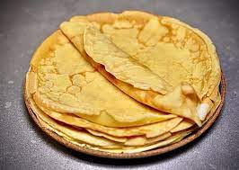

Classic Crepes

Classic easy delicious crepes
A good breakfast for weekends and even desserts. Serve rolled up and filled with jam or fruit and whipped cream.
Ingredients
- 60 g (2¼ oz/½ cup) plain (all-purpose) flour
- 2 eggs
- 250 ml (9 fl oz/1 cup) milk
- melted butter, for brushing
- maple syrup, to serve (optional)
- caster (superfine) sugar, for sprinkling (optional)
- lemon wedges, to serve (optional)
Steps
- Sift the flour into a bowl and make a well in the centre. In another bowl, mix together the eggs and milk, then add to the well in the flour, whisking constantly to prevent lumps forming. Cover with plastic wrap and leave to stand for 30 minutes.
- Meanwhile, preheat the oven to 120°C (235°F/Gas ½).
- Place a 20 cm (8 inch) non-stick crepe pan or frying pan over medium heat. Lightly brush with melted butter, then pour 60 ml (2 fl oz/¼ cup) of batter into the pan and swirl to coat the base evenly. Cook for 1 minute, or until golden underneath, then turn and cook the other side for 30 seconds. Remove, cover with foil and keep warm in the oven. Repeat with the remaining batter to make eight crepes.
- Fold the crepes into triangles. Serve drizzled with maple syrup if desired, or serve the crepes sprinkled with sugar, with lemon wedges on the side.
- Crepes are best eaten the day they are made, but can be frozen in an airtight container for up to 6 weeks, with a layer of baking paper between each. To use frozen crepes, first thaw them, then cover and reheat in a 150°C (300°F/Gas 2) oven for 5–10 minutes.